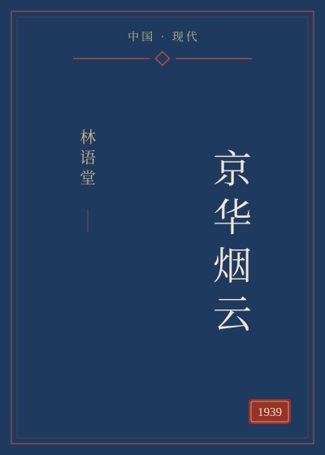

京华烟云
一、基本信息
| 作者 | 林语堂 |
|---|---|
| 成书/出版 | 1939年纽约出版（Britannica：the acclaimed novel Moment in Peking in 1939） Lin Yutang — Encyclopaedia Britannica（百科全书） |
| 国别/地区 | 中国 |
| 时代 | 现当代 · 现代 |
| 体裁 | 长篇小说（英文家族史诗） |
| 语言 | 英语 |

《京华烟云》姚曾牛三家关系图（人物关系图）
二、创作背景
写作缘起：拟译《红楼梦》而不得，遂以英文自撰'现代版红楼'（其自述大意，通说待核）——1900年义和团至1938年抗战的北京三大（姚、曾、牛）家族（通说）。
出版：1939年纽约 John Day 公司出版（通说待核）；书前有庄周梦蝶道家题辞与'全书故事'目录（庄子哲学引文——通说待核）。
荣誉：曾被赛珍珠推荐为诺奖候选（通说待核）；1988年央视电视剧（通说待核）。
三、内容脉络
第一卷（道家女儿）：1900年义和团之乱——姚思安（道家式的富商）举家南避，木兰（长女）途中失散被曾家所救；姚曾两家婚约的缔结（通说）。
第二卷（庭院旧事）：木兰嫁曾家三少爷孙亚（代妹出嫁——通说细节）；姚莫愁（妹妹）嫁孔立夫（学者）；牛怀瑜（牛家恶少）的官场钻营与倒台——民国初年的政治（通说）。
第三卷（秋季歌声）：抗战爆发——姚家曾家卷入流亡；木兰的'乔装'平民式的逃难旅程——'把整个中国的坚忍与美丽写在大地上'（结尾意，通说待核）；阿非与红玉的悲剧（通说）。
四、主要人物表
| 人物 | 身份 | 说明 |
|---|---|---|
| 姚木兰 | 姚家长女 | '道家的女儿'：奇女子——才貌、洒脱与责任（通说） |
| 姚思安 | 姚父 | '道家的家长'：抽鸦片的浪子变为哲学家（通说） |
| 孔立夫 | 学者 | '道家的儿子'与莫愁成婚——木兰的心上人（通说） |
| 曾孙亚、牛怀瑜、曼娘 | 曾家与牛家 | 儒家的媳妇（曼娘）、官场的恶（牛家）对照（通说） |
| 红玉 | 林黛玉式少女 | '宝玉黛玉式的悲剧'（通说） |
五、主题与艺术特点
- 道家哲学的家族化：姚家=道、曾家=儒、牛家=世俗权力——三家三种中国（通说）。
- '一瞬'的时间观：Moment in Peking——庄子'浮生若梦'（题辞语境，通说待核）。
- 女性群像：木兰、莫愁、曼娘、红玉——四种女性道路（通说）。
- 艺术特点：英文写北京的'翻译腔'美学、道家题辞结构、《红楼梦》的家族小说模式。
六、影响与评论
- Britannica（Lin Yutang 条）：1939年'acclaimed novel' Moment in Peking——其国际声誉的文学支柱。
Lin Yutang — Encyclopaedia Britannica（百科全书） - Britannica：'widely translated and long considered a standard text on China'（《吾国与吾民》）——本作同为'向西方讲中国'的系列。
Lin Yutang — Encyclopaedia Britannica（百科全书） - 1988年央视电视剧《京华烟云》（赵雅芝主演，通说待核）与2005年电视剧（通说待核）。
Lin Yutang — Encyclopaedia Britannica（百科全书） - 中译：张振玉译本（上海书店等，通说待核）与郁飞译本（《瞬息京华》，通说待核）。
Lin Yutang — Encyclopaedia Britannica（百科全书）
七、阅读建议
难点
- 英文原文的'中国腔'翻译感——读中译体会其'以英写中'。
- 三大家族数十人物——先画族谱。
- 道家题辞与各卷庄子引文——哲学框架勿跳读。
- 张振玉译《京华烟云》（上海书店出版社/湖南文艺，通说待核）：通行本。
- 郁飞译《瞬息京华》（湖南文艺，通说待核）：作者认可的译名方案。
- 英文本：Moment in Peking（John Day 1939；新 版本通说待核）。
通读三卷 → 精读木兰逃难章与结尾 → 对照《红楼梦》的家族结构 → 讨论'三家喻中国'的设计。
八、待核实
- 1939年 John Day 出版与首印数待核。
- 张振玉/郁飞译本出版信息待核。
- 1975诺奖提名与1988/2005电视剧待核。
- 卷首庄子引文（'大道，在太极之上而不为高……'）逐字核对待完成。
本页主要来源
林语堂的其他收录作品：京华烟云